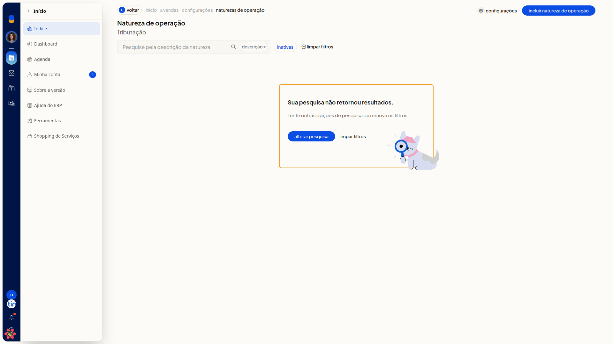
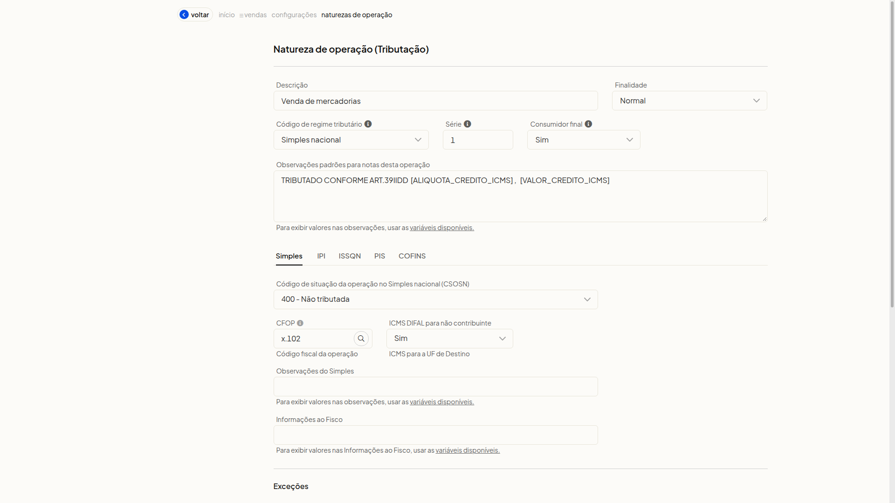
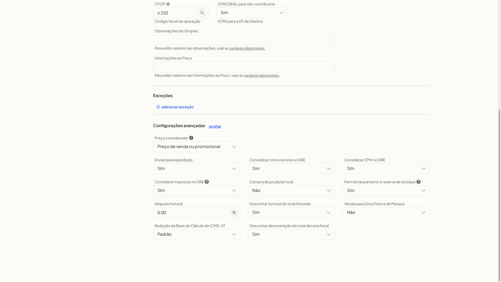
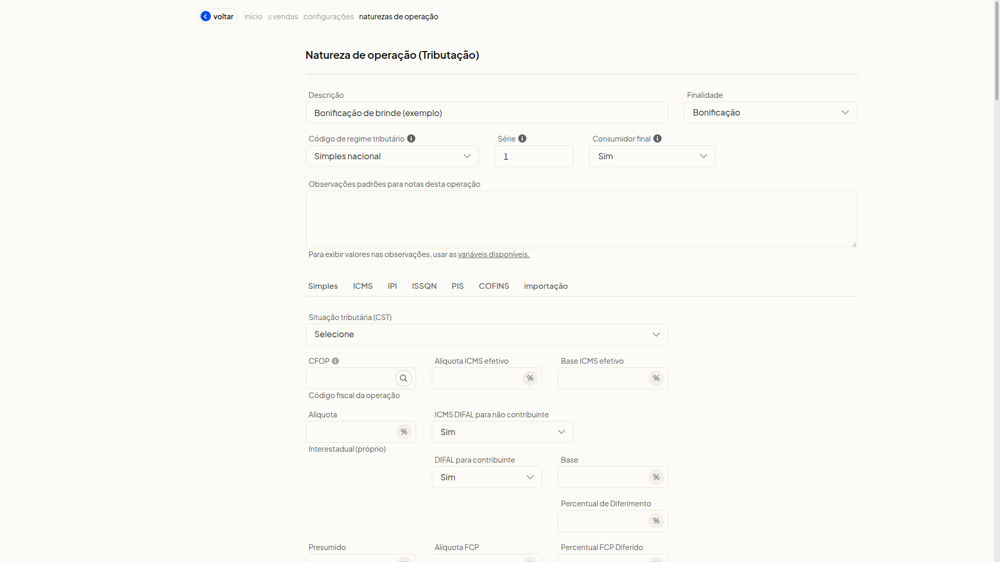
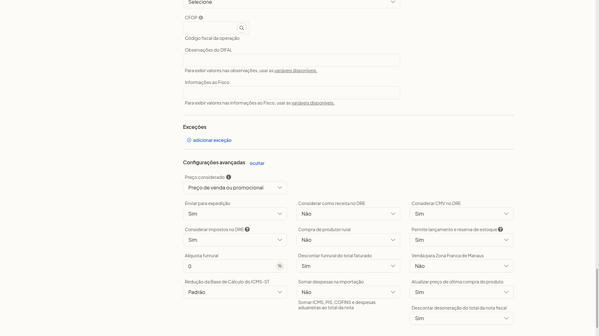
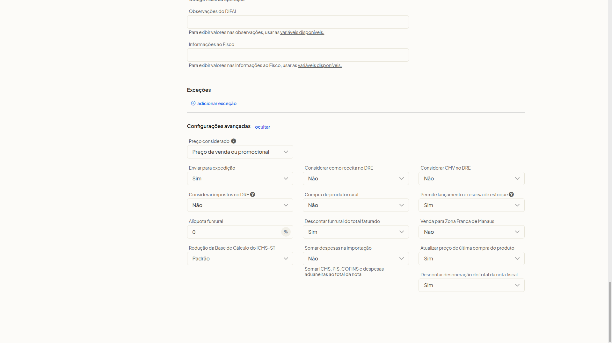

Definir se os impostos da natureza de operação entram na DRE
No ERP da Olist, o campo Considerar impostos no DRE define se os impostos das notas e dos pedidos de uma natureza de operação de saída entram nas deduções do DRE, mesmo quando a operação não é tratada como receita.
Ele fica em Configurações avançadas, separado de Considerar como receita no DRE, que controla só a receita bruta, e de Considerar CMV no DRE. Você define esse valor na natureza já cadastrada ou ao incluir uma natureza, em Configurações > Configurações ERP > Notas Fiscais > Naturezas de operação de saída (tributação).
Importante
- Em bonificação, doação ou brinde, use Sim em Considerar impostos no DRE para incluir os impostos nas deduções.
- Meses de DRE já salvos só passam a refletir a alteração depois que os valores forem recalculados.
Instruções
Na natureza já cadastrada
-
Acesse Configurações > Configurações ERP > Notas Fiscais > Naturezas de operação de saída (tributação).

-
Clique na natureza de saída.

-
Em Configurações avançadas, clique em exibir se a seção estiver recolhida.
-
Em Considerar impostos no DRE, selecione Sim ou Não. O campo não é obrigatório.

-
Clique em Salvar.
Ao incluir uma natureza
-
Acesse Configurações > Configurações ERP > Notas Fiscais > Naturezas de operação de saída (tributação).
-
Clique em Incluir natureza de operação.
-
Informe a Descrição e selecione a Finalidade (Normal, Devolução, Bonificação ou Remessa). Os dois campos não são obrigatórios.

-
Em Configurações avançadas, clique em exibir se a seção estiver recolhida.
-
Confira Considerar impostos no DRE e selecione Sim ou Não se o padrão não servir. O campo não é obrigatório. A Finalidade preenche os três campos, e você pode alterar cada um antes de salvar.
-
Normal deixa os três campos em Sim.
-
Bonificação deixa Considerar como receita no DRE em Não e deixa Considerar CMV no DRE e Considerar impostos no DRE em Sim.
-
Remessa e Devolução deixam os três campos em Não.



- Clique em Salvar.
Informações adicionais
Impostos e estorno seguem o campo
Os impostos da nota fiscal, do pedido de venda e o estorno das devoluções entram nas deduções do DRE conforme Considerar impostos no DRE.
Nota de bonificação com o campo em Sim
Em uma nota de bonificação de R$ 1.000,00, com ICMS de R$ 180,00 e custo de R$ 600,00, Considerar impostos no DRE em Sim deixa as deduções em R$ 180,00, o CMV em R$ 600,00 e o resultado em -R$ 780,00.